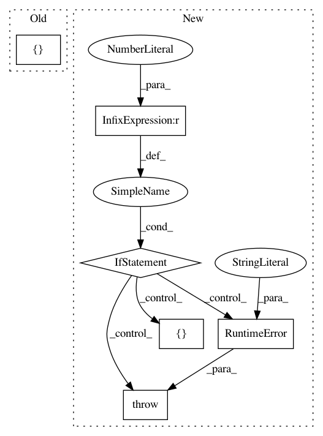

a48f42be08c99cef1a1bb1f15b6208d69d394e28,stellargraph/utils/saliency_maps/saliency.py,GradientSaliency,__init__,#GradientSaliency#Any#,29
Before Change
self.class_of_interest = K.placeholder(shape=(), dtype="int32")
// The input tensors for computing the node saliency map
node_mask_tensors = [
features,
adj,
K.learning_phase(), // placeholder for mode (train or test) tense
self.node_idx,
self.class_of_interest,
]
// The input tensors for computing the link saliency map
link_mask_tensors = [
features,
After Change
This is typically the logit or softmax output.
if len(model.inputs) != 3:
raise RuntimeError("Expected a GCN model with dense adjacency matrix")
// The placeholder for features and adjacency matrix (model input):
features_t, output_indices_t, adj_t = model.input
// Placeholder for class prediction (model output):
output = model.output
// The placeholder for the node index of interest. It is typically the index of the target test node.
self.node_idx = K.placeholder(shape=(), dtype="int32")
// The placeholder for the class of interest. One will generally use the winning class.
self.class_of_interest = K.placeholder(shape=(), dtype="int32")
// The input tensors for computing the node saliency map
node_mask_tensors = model.input + [
K.learning_phase(), // placeholder for mode (train or test) tense
self.class_of_interest,
]
// The input tensors for computing the link saliency map
link_mask_tensors = model.input + [K.learning_phase(), self.class_of_interest]
In pattern: SUPERPATTERN
Frequency: 3
Non-data size: 6
Instances
Project Name: stellargraph/stellargraph
Commit Name: a48f42be08c99cef1a1bb1f15b6208d69d394e28
Time: 2019-06-20
Author: andrew.docherty@data61.csiro.au
File Name: stellargraph/utils/saliency_maps/saliency.py
Class Name: GradientSaliency
Method Name: __init__
Project Name: mozilla/TTS
Commit Name: faf6bdc4cac4b98f0871916d05cf972f58e184ee
Time: 2018-07-27
Author: egolge@mozilla.com
File Name: utils/audio.py
Class Name: AudioProcessor
Method Name: apply_inv_preemphasis
Project Name: mozilla/TTS
Commit Name: faf6bdc4cac4b98f0871916d05cf972f58e184ee
Time: 2018-07-27
Author: egolge@mozilla.com
File Name: utils/audio.py
Class Name: AudioProcessor
Method Name: apply_preemphasis